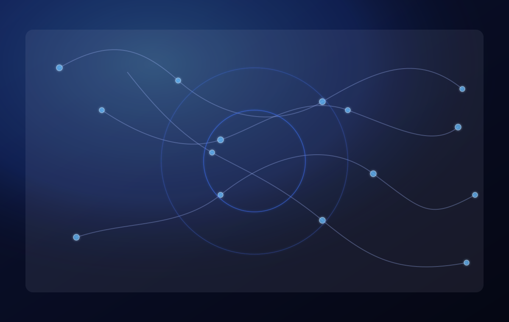

WordPress • Design systems • Performance
Theme System Replatform
A modular WordPress theme foundation with reusable sections, sharp performance defaults, and a clean upgrade path for real editorial content.
Developer portfolio / systems builder
A premium portfolio theme for a developer who connects polished interfaces, WordPress platforms, automation, AI integrations, analytics, and technical leadership into one dependable delivery practice.

Featured work
Use these examples to show product thinking, clean implementation, stakeholder judgment, and measurable improvement.
A modular WordPress theme foundation with reusable sections, sharp performance defaults, and a clean upgrade path for real editorial content.
A workflow that turns fuzzy handoffs into repeatable review steps: checks, evidence, and release notes in one calm lane.
A measurement plan that separates pageview noise from product signals, with event naming, conversions, and dashboard-ready schemas.
Services
Interface builds, service integrations, architecture cleanup, and maintainable UI systems built for change.
Custom themes, editorial workflows, accessible templates, and store experiences that are comfortable to maintain.
Event strategy, conversion mapping, reporting foundations, and data quality checks teams can trust.
WordPress systems
Themes are built as durable systems: clean templates, accessible patterns, reusable sections, and admin experiences that don’t fight the team maintaining them.
Automation
Automation is treated like product infrastructure: scoped inputs, review points, and visible outputs that help the team move faster without losing quality.
Analytics and tracking
Tracking is designed alongside UI: consistent event naming, conversion intent, and dashboards that answer business questions without messy rework.
AI integration
AI features are scoped, structured, and measurable: prompts designed as interfaces, review points where they matter, and privacy-aware patterns from the start.
Technical leadership
Architecture direction, launch planning, mentoring, and stakeholder clarity that keeps delivery moving even when requirements are ambiguous.
Process
Work is mapped, built, reviewed, and measured. That keeps the portfolio credible and the system durable after launch.
Contact
Replace this with a real intake link, email address, or contact form page when installing the theme in WordPress.